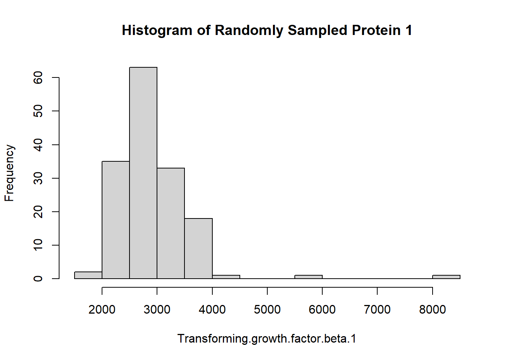
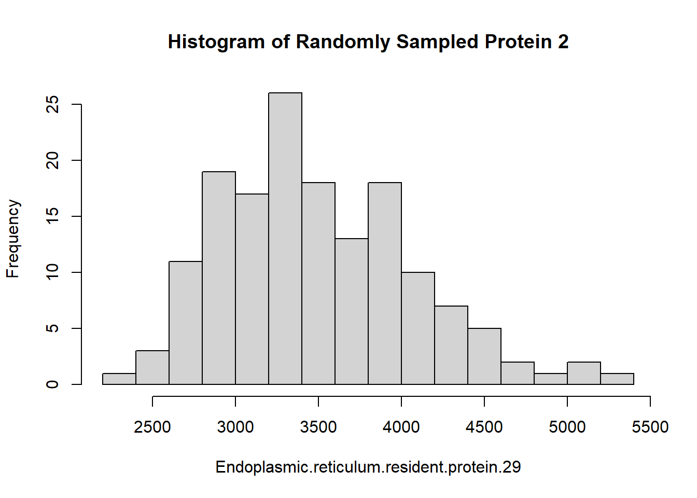
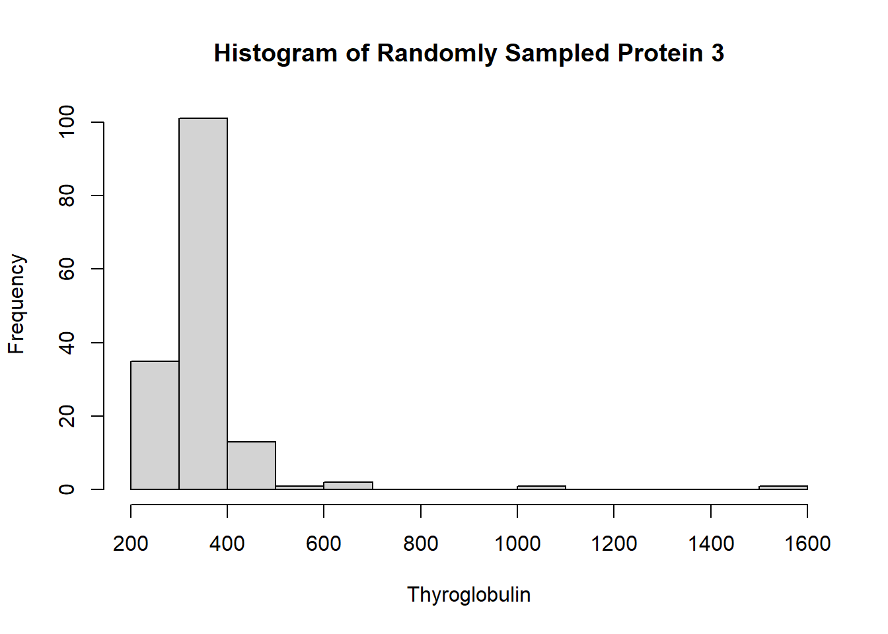
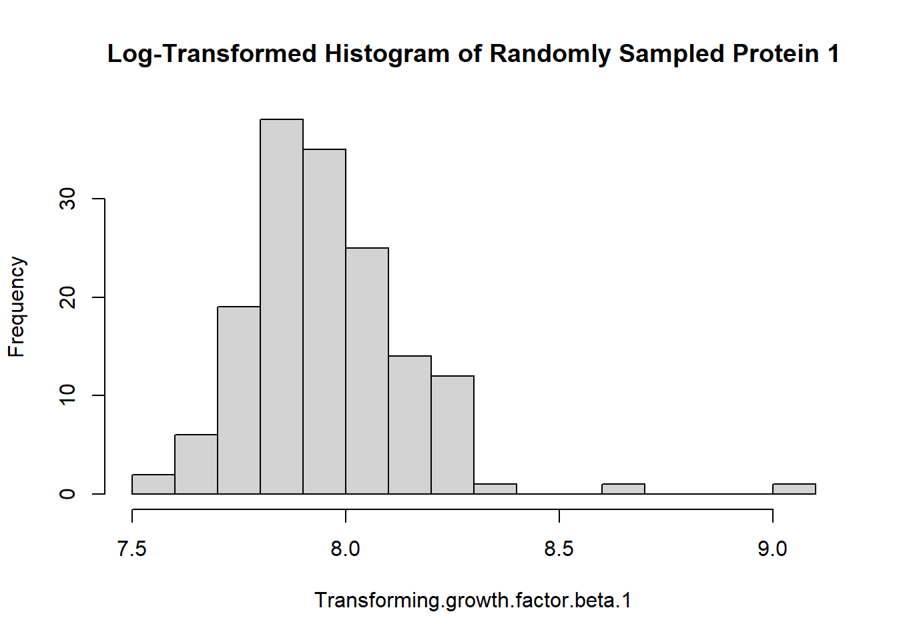
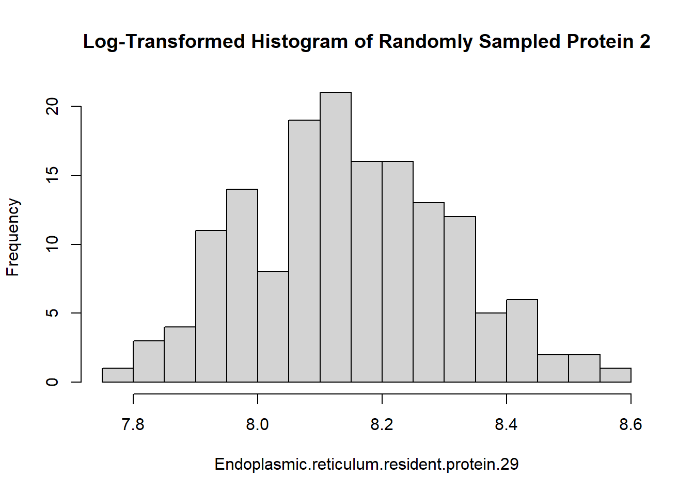
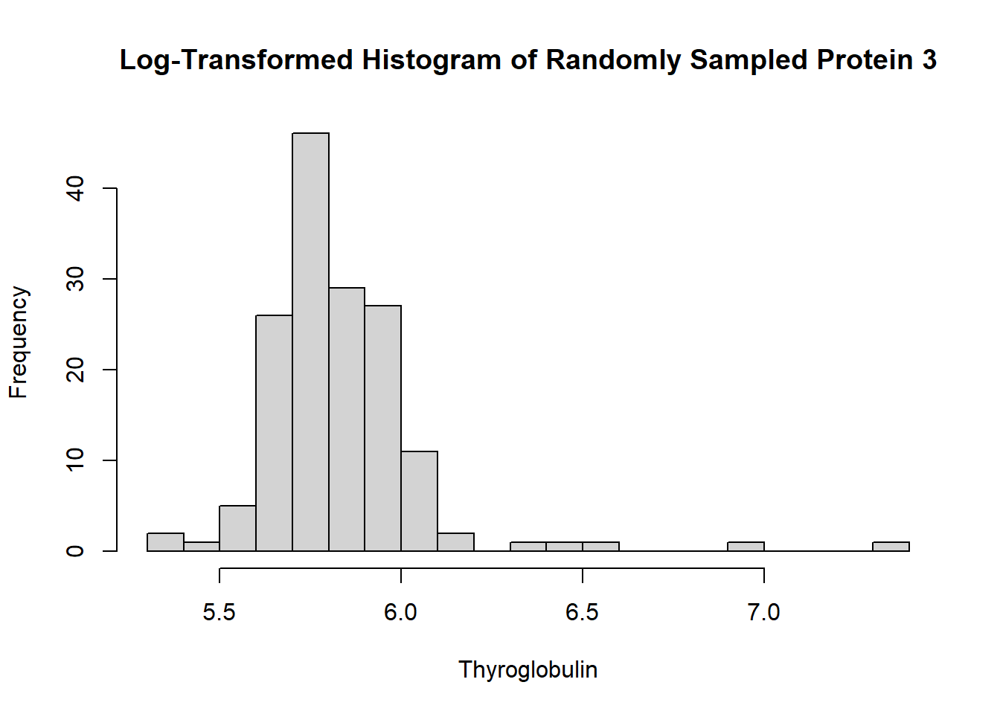
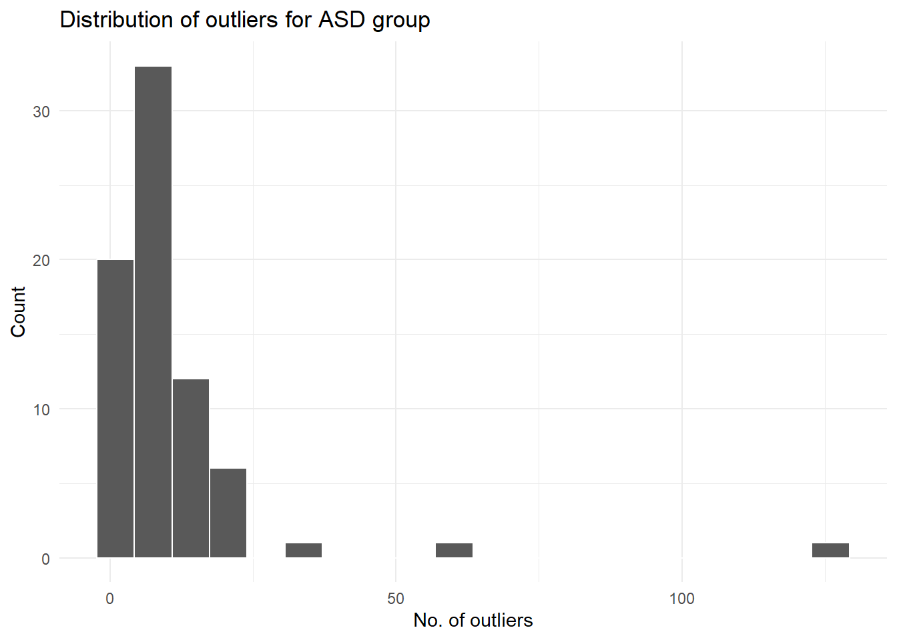
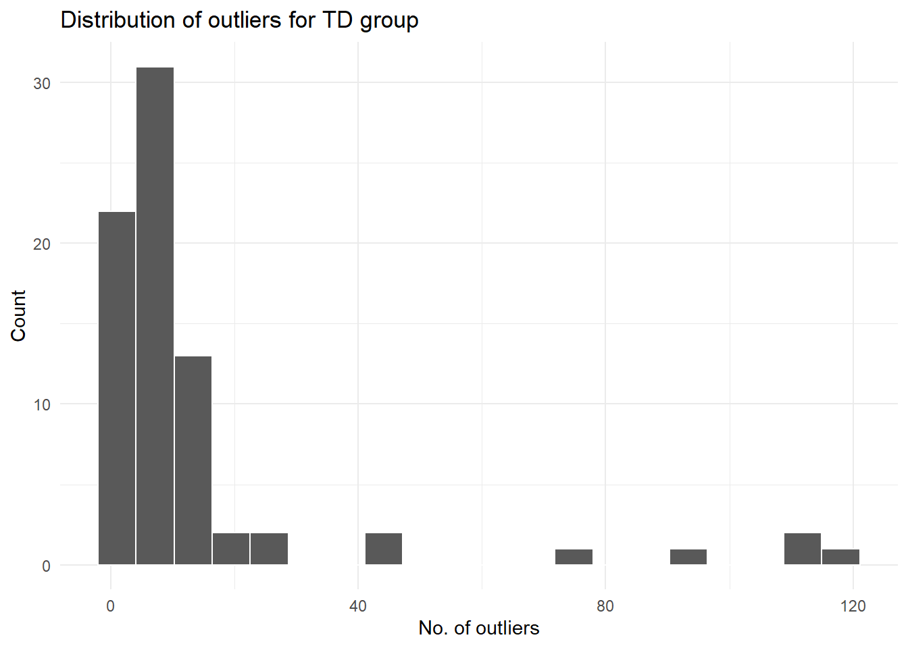

flowchart TD A[Data collection] --> B[Data preprocessing] B --> C[t-Test] B --> D[Correlation approach] B --> E[Random forest] C --> F[Intersection of top 10 from each method; identified 5 core proteins] D --> F E --> F F --> G[Logistic regression model adding in non-core proteins] G-- Measure AUC ---H[Final panel of 9 proteins]
Biomarkers of ASD
Abstract
This report discusses and extends the analysis done in “Blood biomarker discovery for autism spectrum disorder: A proteomic analysis”, a 2021 paper that has since been retracted due to errors in a section of the analysis. We cover the data gathering process and the characteristics of the dataset, the original methodology used by the authors of the paper, and extend the methodology to include three different modifications to the procedures. Specifically, our modifications are: repeat the analysis with a train-test split for all approaches, choose more than ten top predictive proteins in both selection methods, and use a fuzzy intersection instead of hard intersection to select the combination of top predictive proteins. We then test the results of these three independent modifications on our test set and record their classification accuracy, benchmarked by the in-class analysis.
Dataset
The biomarker data in this project comes from a paper by Hewitson et al. (2021), which investigated various statistical methods that could be applied to identify biomarkers of autism. In this paper, data was obtained through a blood draw of 154 male pediatric participants, approximately half of whom were diagnosed with autism spectrum disorder (ASD) and the other half of whom were considered neurotypical (TD). The majority of participants were of Caucasian or Latino ethnicity, and the mean ages of the ASD and TD groups were 5.6 and 5.7 years respectively. All ASD participants were assessed by a clinical psychologist to obtain their Autism Diagnostic Observation Schedule (ADOS) total score - a common measurement of ASD symptom severity. Participants were all healthy and fasted the night before the blood draw.
Blood draws were ran through a SomaLogic protein assay that measured 1,317 proteins in each of the 154 blood samples in total. Of the 1,317 proteins measured, 192 proteins did not pass a quality control check (the exact parameters of which were not described in the paper.) This led to a final dataset of 154 observations of 1,125 proteins each. As part of data pre-processing, protein measurements were then log-10 and z-transformed to deal with skew and outliers, and any outliers that had absolute values greater than 3 were set to 3.
Summary of published analysis
This paper used three different approaches to identify important proteins for ASD prediction. Prior to applying these approaches to the data, the data itself was log and z-transformed with outliers clipped. The three methods were a random forest, a t-test, and a correlation approach. From each of these methods, the top 10 proteins that had the most predictive value (random forest approach), the most significant p-values (t-test approach), or the highest correlation (correlation approach) were selected from each approach. Their intersection of 5 core proteins was identified, and another 13 proteins were included in at least one but not all three top 10 protein lists. The core proteins were DERM, MAPK14, IGD, suPAR, and EPHB2. The other 13 proteins were ALCAM, eIF-4H, SOST, c6, calcineurin, RELT, fCN1, PTN, C1QR1, prolactin receptor, ROR1, GI24, and ARSB.
From there, a logistic regression model was fitted 1,000 times with an 80-20 train-test split to calculate model performance via area under the curve (AUC). The purpose of these models was to add one by one the 13 non-core proteins and test whether the model AUC increases past the performance of the core protein model. This procedure resulted in four additional proteins that increased the AUC of the logistic regression model when added to the core group. These proteins were ROR1, GI24, eIF-4H, and ARSB. Therefore, the final panel of proteins that were identified through this procedure consisted of nine proteins (DERM, MAPK14, IGD, suPAR, EPHB2, ROR1, Gi24, eIF-4H, ARSB), with an AUC of 0.860 \(\pm\) 0.064, sensitivity of 0.833 \(\pm\) 0.118, and specificity of 0.846 \(\pm\) 0.118.
The methodological flowchart of this paper is shown below.
Findings
Impact of preprocessing and outliers
Data visualization of the protein distributions before pre-processing revealed a very clear reason for their log-transformation. As seen below, the distributions of these randomly chosen proteins (and in general most of the proteins in the dataset) are skewed to the right. The majority of observations are clustered around the lower end of measurement, but there is a long tail of higher-value protein measurements that throws off the distribution.



Applying the log transformation to protein measurements will rein in outliers and make the distribution of sampled proteins more Gaussian, which is critical for our further analysis procedures such as the t-test. The log transformation effect can be seen below, for the same proteins. The x-axis has much less range than the non-log-transformed histograms (e.g. 6-7.5 for the log-transformed roundabout homolog 3 protein vs. 500-2000 for the same protein without a log transformation.) This ensures that the skew in the data is controlled and that the models can fit on data that better meets their assumptions.



Similarly, data visualization of the outliers for both groups revealed the extent of outliers in the data. Below we present the distribution of how many outliers each participant in the two groups had.


Both the ASD and TD groups have a similar distribution of outliers. What is more concerning is the large range and high counts of outliers - most participants had fewer than 20 outliers, but there were a significant number of participants in both the TD and ASD groups who had upwards of 50 outliers. Running the head() command on the outlier dataframe shows that the TD group in particular has a higher frequency of individuals with a large (>75) number of outliers than the ASD group.
# A tibble: 15 × 3
# Rowwise:
group ados n_indv_outliers
<chr> <dbl> <int>
1 ASD 22 126
2 TD NA 118
3 TD NA 114
4 TD NA 111
5 TD NA 94
6 TD NA 77
7 ASD 7 62
8 TD NA 44
9 TD NA 42
10 ASD 12 37
11 TD NA 27
12 TD NA 24
13 TD NA 22
14 ASD 6 21
15 TD NA 21Methodological variations
Train-Test Split & Performance
For this approach, we split the data with an 80-20% train/test split. A random forest was fit in Python on the training data and achieved 80% accuracy on the testing data, comparable to the in-class analysis. We furthermore proceeded to conduct the t-test and random forest approaches in R on the training data, selecting the top 10 proteins from each method and finding their intersection. Interestingly, the intersection of the top 10 proteins from the t-test and random forest computed from the training data only contained 4 core proteins: dermatopontin (DERM), pleiotrophin (PTN), coagulation factor (CFIX) IX, and mitogen activated protein kinase 14 (MAPK14). Of these core proteins, only two (DERM and MAPK14) were also selected in the original analysis of 9 core proteins.
Within the train/test split approach, the Python random forest classifier achieved comparable accuracy to the in-class analysis.
However, under the same train/test split, the overall predictors selected by the intersection of t-Test and random forest methods performed slightly worse than the in-class analysis:
# A tibble: 4 × 3
.metric .estimator .estimate
<chr> <chr> <dbl>
1 sensitivity binary 0.6
2 specificity binary 0.75
3 accuracy binary 0.677
4 roc_auc binary 0.717For comparison, the in-class analysis numbers were 0.875 sensitivity, 0.8 specificity, 0.839 accuracy, and 0.908 AUC.
Larger Number of Predictive Proteins & Performance
In this approach, we followed the standard methods of the in-class analysis but changed two important factors in the t-Test and random forest approaches respectively. Instead of selecting the first n = 10 proteins in the t-test and random forest approaches, we selected the first n = 30. This resulted in a core protein panel of 19 proteins - DERM, RELT, calcineurin, MRC2, IgD, PTN, FSTL1, MAPK2, TGF-b R III, MMP-2, gp130 soluble, Notch 1, ALCAM, MATN2, ROR1, RET, TSP4, MAPK14, and EPHB2. There is a good amount of overlap between these selected proteins and the original 9 proteins from the paper - specifically, DERM, MAPK14, IgD, EPHB2, and ROR1 were all selected in both approaches.
We then trained a logistic regression model with the same steps as the in-class analysis, but on the expanded core dataset of 19 proteins. This logistic regression model achieves better specificity and AUC than the in-class model: 0.86 compared to 0.8 for specificity and 0.94 for AUC. The general accuracy of the model is also comparable to the in-class analysis.
# A tibble: 4 × 3
.metric .estimator .estimate
<chr> <chr> <dbl>
1 sensitivity binary 0.75
2 specificity binary 0.867
3 accuracy binary 0.806
4 roc_auc binary 0.946Fuzzy Intersection & Performance
The fuzzy intersection was produced by following the standard t-Test and random forest approaches followed in the in-class analysis up until the point of finding the intersection of the two top 10 protein sets. Instead of using the intersect() function, we instead used the union() function to produce an overlapping junction of both top 10 protein sets. From there we fit the standard logistic regression model seen in class, using glm(). However, the results of this standard logistic regression model were extremely unsatisfactory, with every metric performing worse than the in-class analysis.
# A tibble: 4 × 3
.metric .estimator .estimate
<chr> <chr> <dbl>
1 sensitivity binary 0.562
2 specificity binary 0.733
3 accuracy binary 0.645
4 roc_auc binary 0.779We proceeded to fit a cross-validated logistic regression model the cv.glmnet() function from the glmnet package, using an elastic net parameter of \(\alpha = 0.1\), which emphasized the ridge penalty much more than the lasso penalty. Our cross-validated logistic regression model had better performance than the vanilla logistic regression model. However, this fuzzy intersection model still does not out-perform the in-class analysis in most metrics.. The only metric that it outperforms the in-class analysis on is specificity, with 0.86 specificity compared to 0.8.
# A tibble: 4 × 3
.metric .estimator .estimate
<chr> <chr> <dbl>
1 sensitivity binary 0.625
2 specificity binary 0.867
3 accuracy binary 0.742
4 roc_auc binary 0.879